| 日付 | 2015年10月12日（月） |
|---|---|
| 山域 | 奥多摩 |
| メンバー | 家族（妻、長女・4歳、長男・2歳） |
| 山行形態 | 子連れ日帰り |
| アクセス | 車 |
| ルート (Map) | 都民の森 (9:16) - (9:51) 三頭ノ大滝 - (10:57) ムシカリ峠 - (11:16) 三頭山西峰 (12:04) - (14:22) 森林館 (14:34) - (14:45) 都民の森 |
2年振りの三頭山に行く。
この山には過去に3度も行っているのだが、家族で行ったことはなかった。
子供でも登りやすい山のため、4度目の訪問だ。
本日は遅めの出発。駐車場はほぼ満車だったが、何とか停めることができた。
この時間なのに、そこそこ出ていく車もあるのが不思議だ。
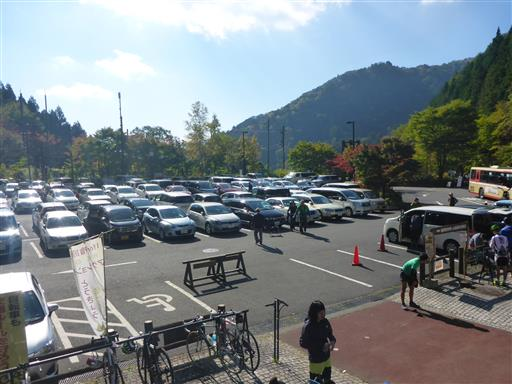
登山口にちょっとした遊具がある。娘は早速遊んでいる。
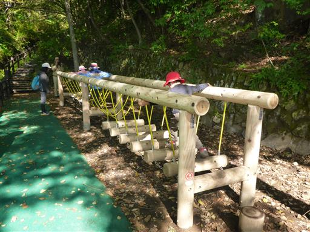
ひもを引っ張ると、キツツキが金属をたたいて音が鳴る。
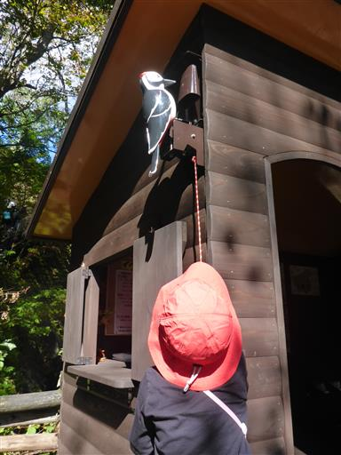
最初はチップが敷き詰められた歩きやすい道だ。
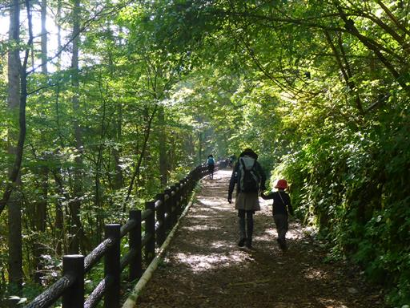
途中で展望が開ける。
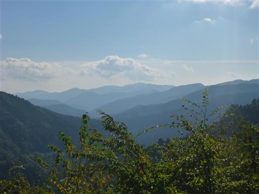
滝見橋に到着する。
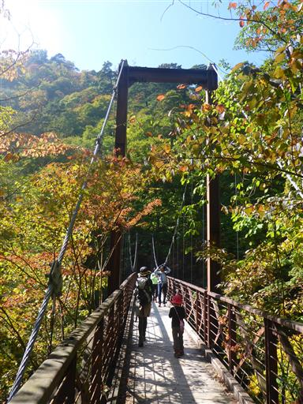
三頭大滝を眺める。周囲は少し色付き始めている。
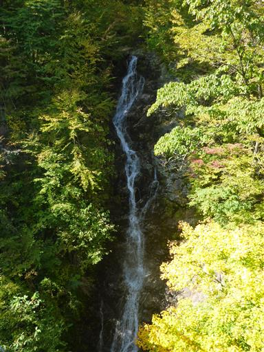
滝の上流部は登山道のすぐ近くを流れている。割と小さい沢だ。
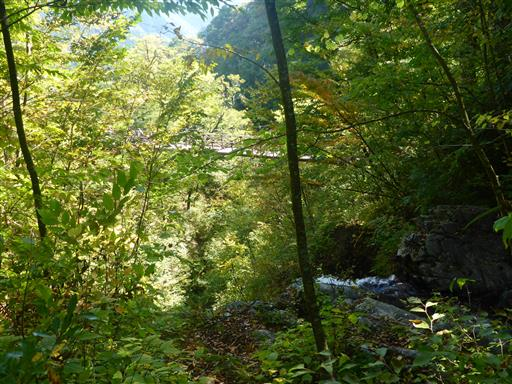
尾根コースと沢コースの分岐点。前回同様、沢コースを選択する。
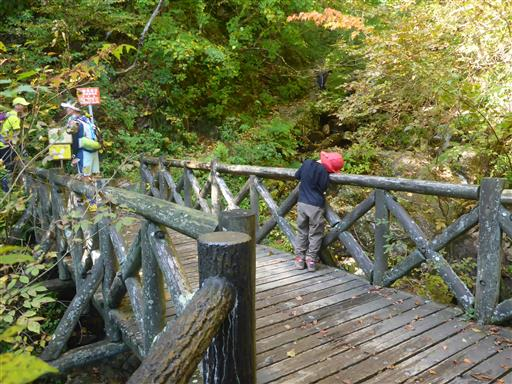
沢沿いの道を登って行く。水の流れは少ない。
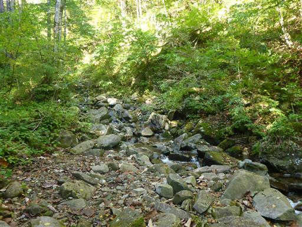
所々で沢を渡る。簡単に越えられる幅なのだが、娘は苦戦している。
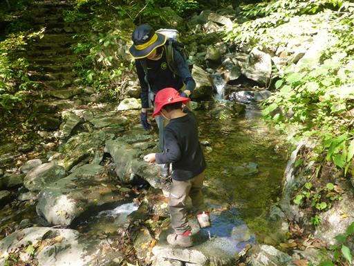
この辺りは大木が多い。
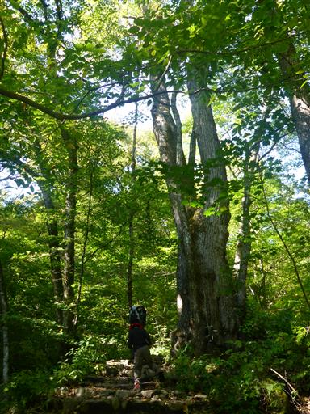
周囲は少しだけ紅葉している。
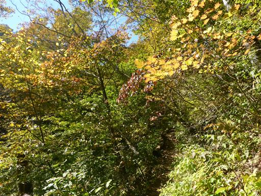
ムシカリ峠に到着。
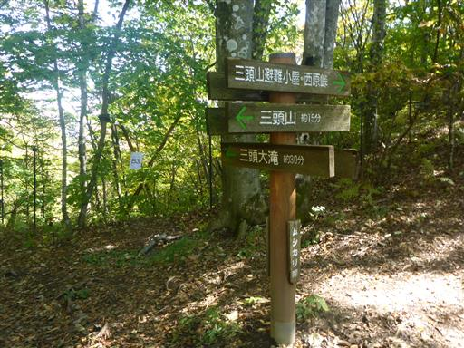
ここからは尾根コース。山頂まではあと少しだ。
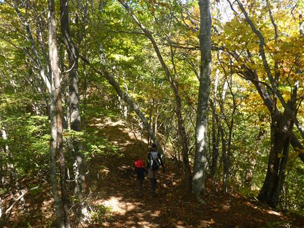
変わった形の木。何度来てもこの木はよく目立つ。
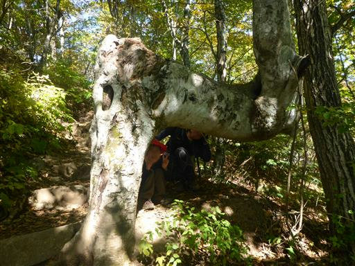
三頭山西峰に到着。標高1527m。
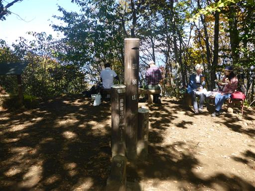
富士山が良く見える。先週には無かった雪を被っている。
どうやら本日が初冠雪だったようだ。
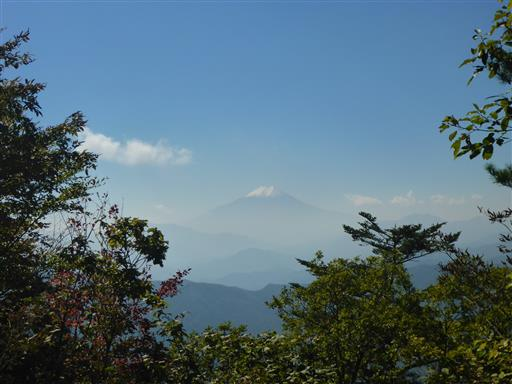
好天の休日なので山頂はよく賑わっている。

下山は息子も歩く。
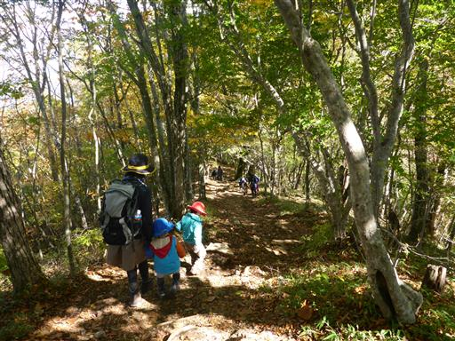
展望台に到着。
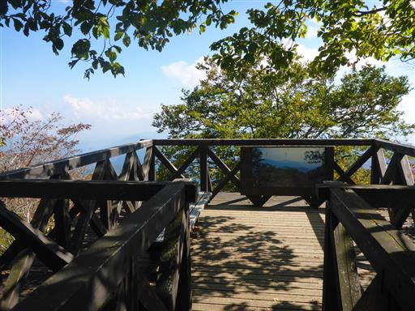
御前山と大岳山が見える。この季節は少々木が邪魔だ。
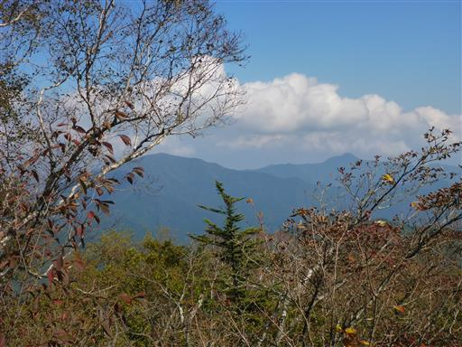
見上げると紅葉が美しい。
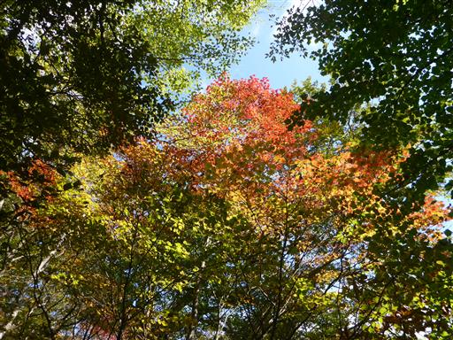
マムシグサ。実で遊んでいると登山者から有毒植物だと教えてもらう。
マムシグサに毒があるとは知らなかった。
調べてみると、食べたら口に激痛がはしり、まれに誤飲事故があるようだ。
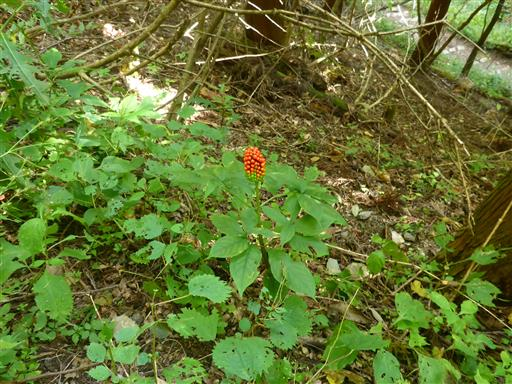
森林館に立ち寄る。子供たちは木馬に乗って遊んでいる。
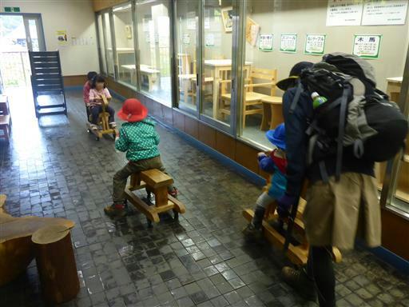
外にある遊具でも遊ぶ。簡単なのものばかりで凝ったものは無い。
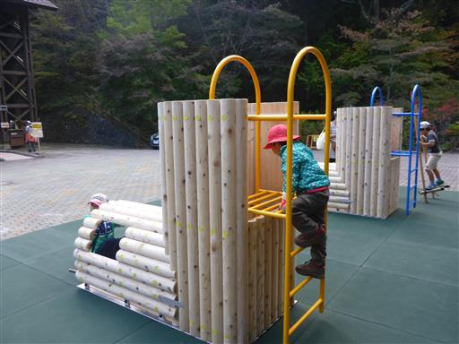
竹馬に挑戦。足場はかなり低い位置につけられているが、それでも娘は苦戦している。
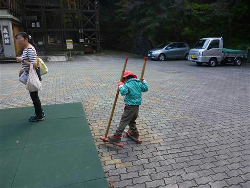
駐車場に着いたら息子がまた遊具で遊び出す。
短いコースなのだが、時間がかかる登山だった。
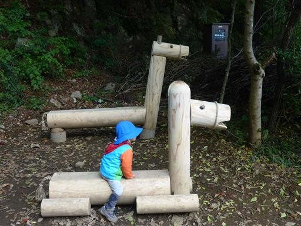